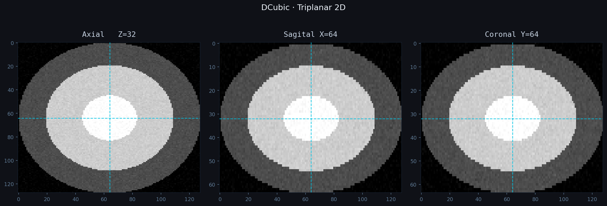
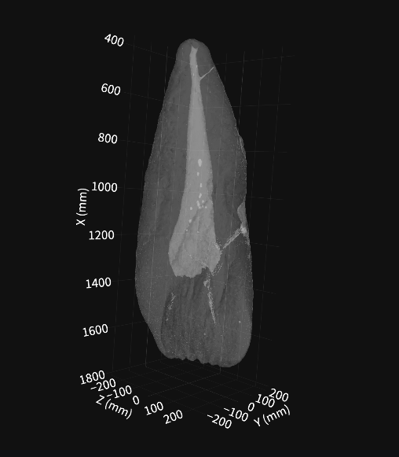
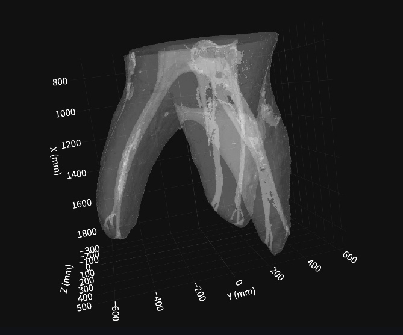
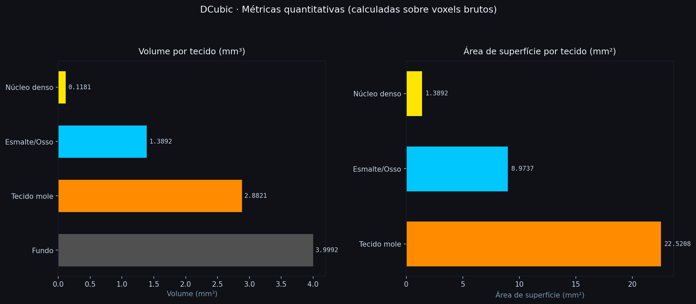

Morfologia interna e externa a partir de micro-CT.
Todas as funcionalidades operam sobre os voxels brutos — as configurações visuais nunca alteram os dados.
Cortes axial, sagital e coronal com escala de cinza global e crosshair sincronizado entre os três planos. Navegação por índice de voxel com sliders independentes.

Limiarização independente para fundo, tecido mole, esmalte/osso e núcleo denso. Overlay RGBA em tempo real sobre os voxels brutos, com contagem por compartimento.

Malhas 3D geradas por marching cubes a partir dos masks de voxels brutos. Visualização WebGL (Plotly Mesh3d) com rotação, zoom e pan no navegador. Opacidade por tecido e plano de corte Z ajustáveis.

Volume (mm³) por contagem de voxels, área de superfície (mm²) por soma de triângulos e distância euclidiana entre dois pontos. Exportação STL/OBJ por tecido e relatório PDF.

O DCubic Image System Platform é uma plataforma computacional de código aberto para a análise quantitativa de volumes tridimensionais obtidos por microtomografia computadorizada (micro-CT), no contexto da pesquisa odontológica da Faculdade de Odontologia da Universidade de São Paulo (FOUSP/USP).
Permite a visualização triplanar de volumes DICOM, TIFF e NIfTI, a segmentação interativa de tecidos por limiar de intensidade e a geração de métricas morfométricas rigorosas — volume (mm³) e área de superfície (mm²) por compartimento tecidual — em conformidade com os princípios de integridade de dados científicos.
Desenvolvida inteiramente com bibliotecas de código aberto, destina-se exclusivamente à pesquisa acadêmica sem fins comerciais. Todo o pipeline respeita um princípio fundamental de separação entre dado bruto e exibição visual.
Qualquer configuração visual — paleta de cor, brilho, threshold de renderização, opacidade — nunca pode alterar os dados brutos do volume nem os valores calculados (volume em mm³, área de superfície, distâncias, densidade). Toda métrica é sempre calculada a partir da matriz de voxels original, nunca da imagem renderizada ou da malha 3D.
Bibliotecas de código aberto com licenças permissivas, adequadas para pesquisa acadêmica.
FORMATOS · DICOM (pasta .dcm) · TIFF stack · NIfTI (.nii / .nii.gz)
Acesse o app e valide com o volume sintético, ou envie seu próprio micro-CT.